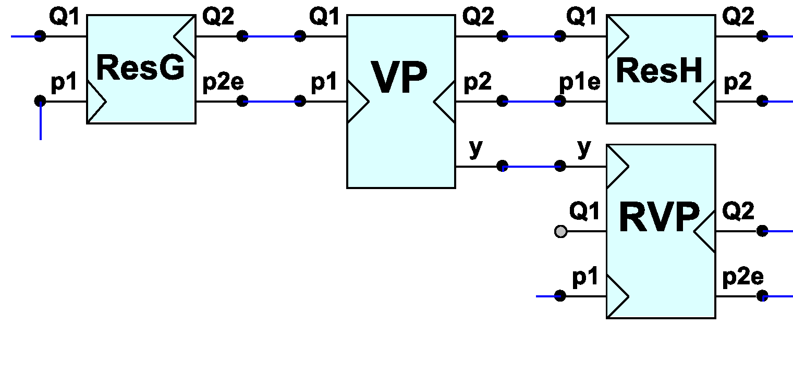

<div class="panel panel-default">
  <div class="panel-body">
 <h1>Simulation Process Organization</h1>
<p>Using visual specifications of described multi-pole models of hydraulic components one can graphically compose models of various fluid power systems for simulating dynamic responses. </p>

<p>When simulating dynamic behavior, transient responses in certain points of the fluid power system caused by applied disturbances are calculated. Disturbances are considered as changes of input variables of the fluid power system (pressures, volumetric flows, load forces or moments, control signals, etc.). Time step length and number of steps are to be specified. For integrations in dynamic calculations fourth-order classical Runge-Kutta method is used in component models. </p>

<p>Dynamic computing process is organized by corresponding process class (<code>dynamic Process 3D</code>). To follow the system behavior, concept of state is invoked. State variables are introduced for each component to characterize behavior of the element at the current simulation step. </p>

<p>Simulation tasks require computing states in a loop until some satisfying final state is reached. To specify such task in CoCoViLa, subtasks are used. The following statement specifies that a <code>finalstate</code> can be computed from a given <code>initstate</code> if a function exists that calculates the <code>nextstate</code> from known states (usually from <code>prevstate</code> and <code>state</code>):</p>
<p> <code>[prevstate, state -> nextstate], initstate -> finalstate {process}</code>.</p>

<p>To solve a topmost computational problem <code>initstate -> finalstate</code>, the subtask <code>prevstate, state -> nextstate</code> must be solved. If the subtask is solvable, higher-order dataflow is constructed by the CoCoViLa planner. The constructed function  <code> prevstate, state -> nextstate</code>   is passed as an argument to the method process and this method can iteratively call the function to increment the state as long as it is needed. </p>

<p>When solving subtask   <code>prevstate, state -> nextstate</code>   loop dependences between outer variables (poles) of components models may occur. The described below technique is used for calculating variables in loop dependences. One variable in each loop is split and iteration statement for calculating variables in loops is specified:</p>
<p><code>[primset -> secondset], initset -> finalset {iterator}</code>, </p> 
<p>where:   <code>initset</code> – set of approximate initial values of variables in loop, 
	     <code> primset, secondset</code> – sets of split variables, 
 	     <code> finalset</code> – set of variables in loop, computed using iterations.</p>
<p>To solve computational problem <code>initset -> finalset</code>, the subtask <code>primset -> secondset</code> for recomputing split variables must be solved. The synthesized function <code>primset -> secondset</code> is passed as an argument to the method iterator and this method can iteratively call the synthesized function to calculate <code>finalset</code>. </p>
<p>The method is illustrated in the following example.</p>
 
 
<p> In this fragment two loop dependencies V<code>P.Q1 -> ResG.Q2 -> ResG.p2e -> VP.p1 -> VP.Q1 and  VP.Q2 -> ResH.Q1 -> ResH.p1e -> VP.p2 -> VP.Q2 </code>take place. The loop dependencies can be solved if variables ResG.p2e and ResH.p1e are split and calculated using built-in iteration method. 
State variables and split variables must be described in component models. When building a particular simulation task model and performing simulations state variables and split variables are used automatically.</p>
<p>When composing a simulation task all the parameters of components must be provided with necessary parameter values through properties windows. Approximate initial values are to be specified in properties windows as well.</p>
<p>All the input variables in the dynamic simulation tasks are to be specified  by dynamic <code>Source</code> and <code>dyn_stat_Source</code> classes. All the constant inputs are to be specified  by constant Source classes. Time is specified by <code>Clock</code> class. </p>
<p>In a simulation example hydraulic fluid specified in dynamic Process 3D properties is used. Physical properties of fluid (density ρ, kinematic viscosity ν and compressibility factor β) are calculated for each component at each simulation step depending on medial pressure in the component. </p>

  </div>
  </div>